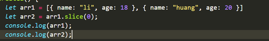
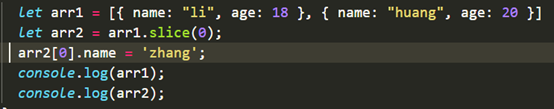
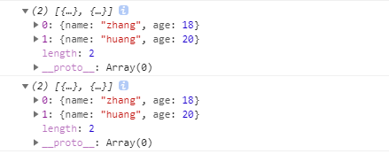
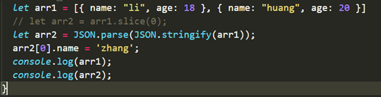
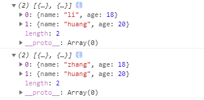
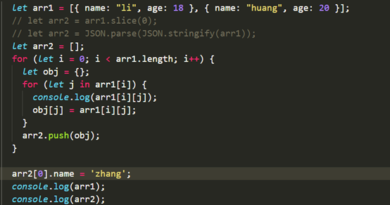
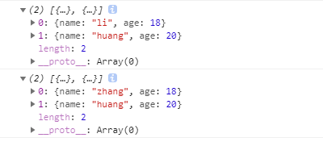

原文连接:https://www.cnblogs.com/lixue123/p/11736858.html
JS中有关引用对象的拷贝问题
问题描述：在开发过程中，拷贝一个对象数组给另一个数组的时候，改变新数组中对象的属性值，原数组中的对象属性值也跟着改变了。
例如新定义一个数组arr1，里面有两个对象，然后再新定义一个数组arr2，将arr1的值通过slice()方法拷贝给arr2，由于slice()方法是深层拷贝，所以arr2指向的是一个新的数组，而不是arr1指向的数组。如下代码所示：

在浏览器控制台打印如下:

通过slice方法拷贝，arr1和arr2理应指向的是不同的数组，然而当我们改变arr2里面元素的内容的时候，arr1里面的元素也跟着改变了。代码如下：

控制台打印如下：

可以看出，arr1里面的第一个元素的name属性值也跟着改变了。
原因：这是因为slice()方法只是实现了对第一层的深拷贝，对于第二层的对象仍然是浅拷贝，也就是arr1[0]和arr2[0]指向的还是同一个对象，所以当arr1[0]里面的属性值改变时arr2[0]里面的属性值也跟着改变了。
- 解决方法：
（1） 通过JSON解析解决
let arr2 = JSON.parse(JSON.stringify(arr1));

控制台打印如下：

问题得到解决，而且方式很简单。但是这种方法有一定的局限性，详情参考：https://www.jianshu.com/p/b084dfaad501
（2） 循环数组里面的对象属性，获取到每一个属性值再赋给一个新对象。

控制台打印如下：

其他方法参考：https://www.cnblogs.com/myzy/p/8561353.html
有关JS深拷贝和浅拷贝参考：https://www.vue-js.com/topic/5da046776f28f2d37a40465b